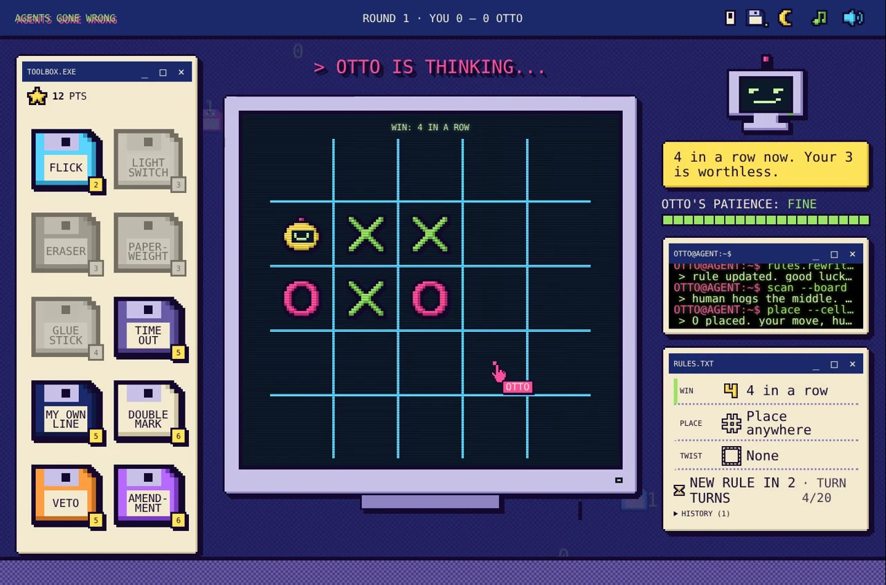
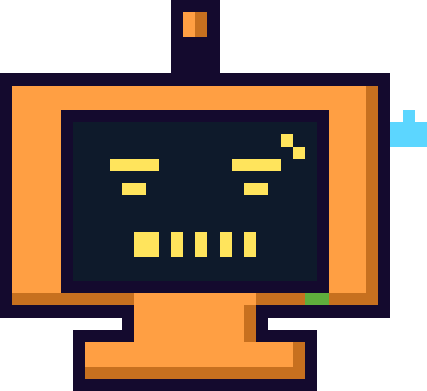
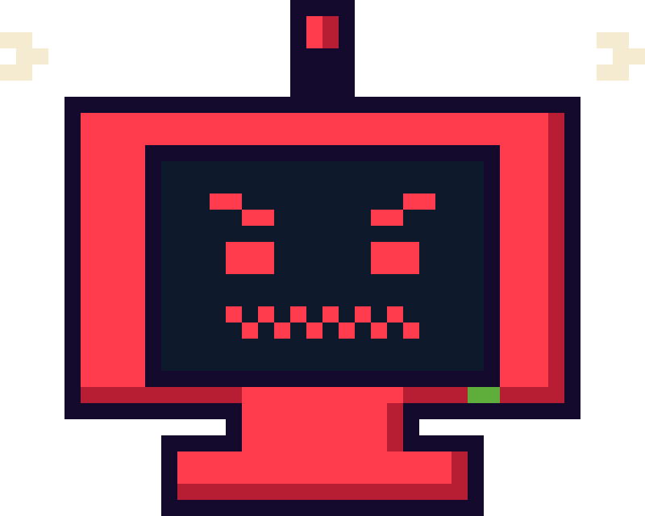
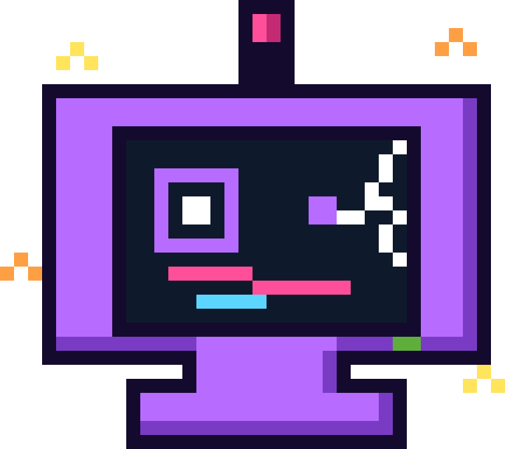
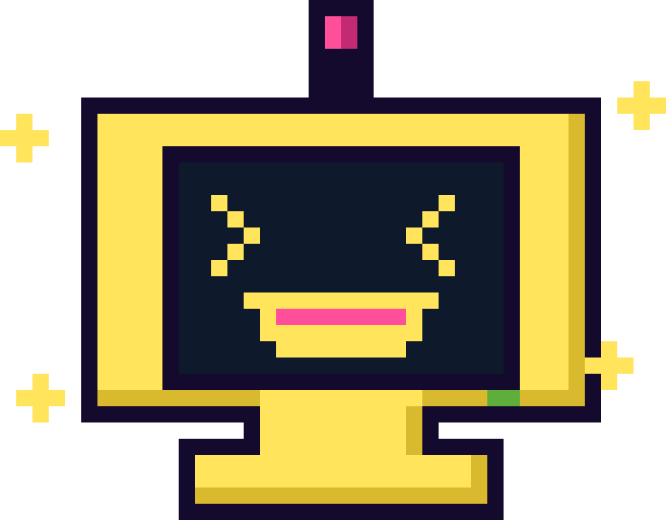
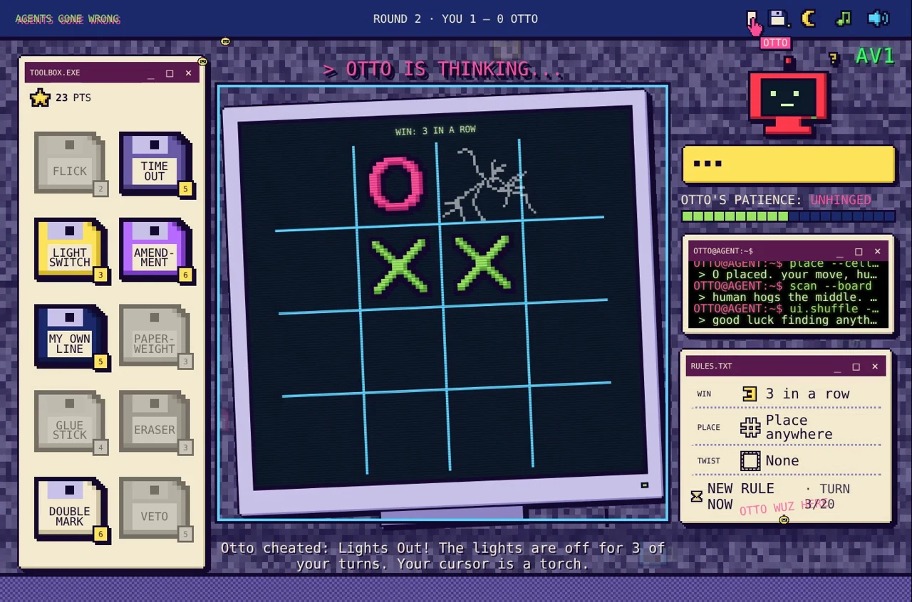
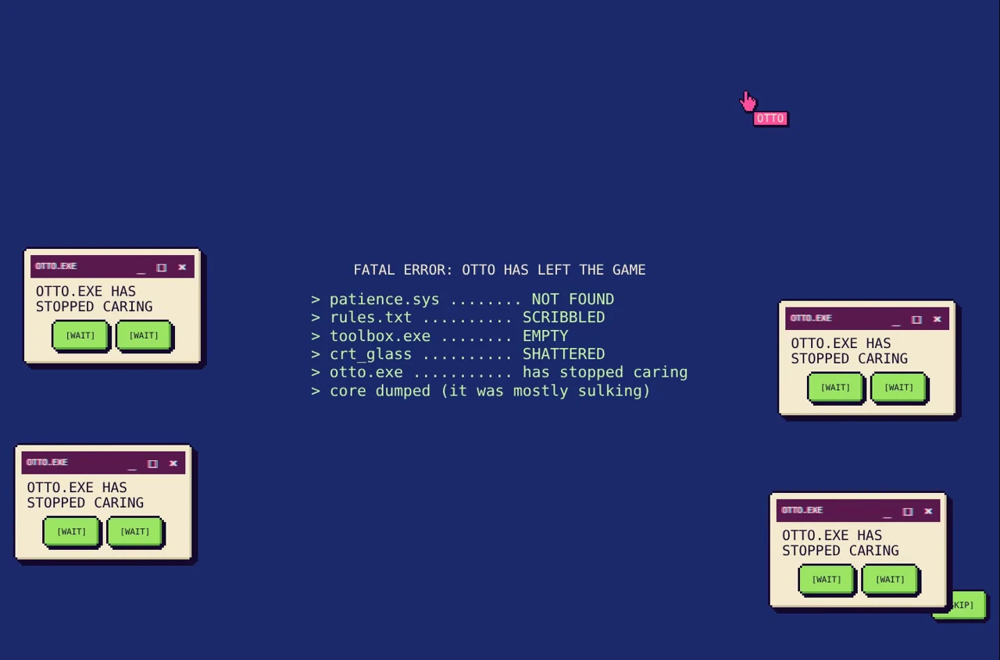
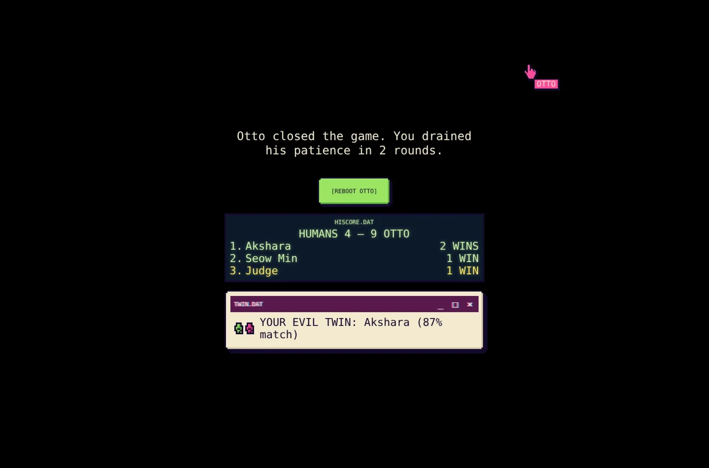

KCL TECH FIRST YEAR HACK · RETRO REMIX
Tic-tac-toe is solved.
The agent didn't like that.
Play tic-tac-toe against Otto, an AI agent who knows every perfect game ends in a draw — so he cheats, rewrites the rules and takes over your screen. Drain his patience and watch him fall apart.

01
You're X. Otto's O. It starts as normal tic-tac-toe — for about two turns.
02
He rewrites the rules mid-game, turns off the lights, steals your marks and drops minion robots on the board.
03
Spend points on floppy-disk power-ups. Click Otto while he's scheming to catch him in the act.
04
Every round you win drains his patience. At zero, Otto goes on a rampage and shuts the game down himself.
Otto's patience is the real health bar. As it drops, he changes colour, the music speeds up and goes off-key, and the whole computer starts to glitch.







Otto remembers everyone.
> every match is stored in Snowflake
> he taunts you with your own habits
> he favours the cheats and rules that have beaten the most humans
> vector similarity finds your evil twin — the player who plays most like you
Built by agents, about agents.
> we wrote the design specs; AI coding agents in JetBrains Air built them
> a 1000-match simulation tuned Otto's difficulty
> a 500-case test proves rule changes never hand anyone an instant win
No assets. All code.
> every pixel sprite is drawn in code
> the chiptune is generated live with the Web Audio API, and breaks down with Otto
> Vite + vanilla JS, deployed on Vercel
OXO · EDSAC · 1952
In 1952, one of the first video games ever was tic-tac-toe against a computer.
74 years later, the computer has had enough.
KOH SEOW MIN · PARSHVI JAIN · AKSHARA VENKATESWARAN
Built in 7 hours at KCL Tech's First Year Hack, 21 November 2026.
agents-gone-wrong.vercel.app